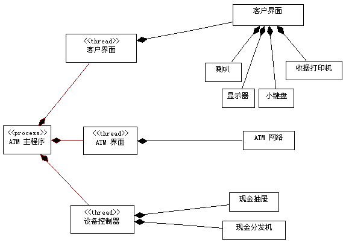

| 概念：流程视图 |
 |
|
| 相关元素 |
|---|
为理解系统的流程组织提供基础，在分析和设计规程中使用称为流程视图的体系结构视图。只有一个系统流程视图，该视图说明了系统的流程分解，包括类和子系统到进程和线程的映射。在每次迭代期间优化流程视图。如 [BOO98] 所述：“使用 UML，在与设计视图相同类型的图（即类图、交互图、活动图和状态表图）中获取此视图的静态和动态方面的内容，但要关注代表这些线程和进程的活动类”。例如，在构造和使用流程视图时关注并行、响应时间、死锁、吞吐量、容错和可伸缩性等问题。 有可能在不使用直接底层操作系统支持的情况下设计并发，例如使用特别编写的调度程序或其他运行时支持。在这样的情况中，在应用程序基础结构级别而不是操作系统级别模拟并发。如果需要，可以使用其他构造型（除了标准线程和进程）作出该区分（以指导实施）。例如，Ada 编程语言包含它自己的、基于 Ada 任务的并发模型；Ada 运行时必须提供该功能，无论运行它的操作系统是否有相应的等价功能（比如线程），该功能可用于支持 Ada 任务。 在实时系统中，Rational Unified Process 建议使用 封装体来表示流程视图中的活动类。封装体具有很强的语义，可简化并行的建模： 封装体来表示流程视图中的活动类。封装体具有很强的语义，可简化并行的建模：
 流程视图显示系统的进程组织。 还有其他四个视图：用例视图（在需求规程中处理）、逻辑视图、部署视图和实施视图；后面三个视图在分析与设计工作流程和实施工作流程中进行处理。 软件体系结构文档中记录了体系结构视图。可以添加不同的视图（例如安全视图）来说明软件体系结构的其他特定方面。 因此本质上，可以将体系结构视图看成所构建模型的抽象或简化，在该视图中通过将细节放在一边而使重要特征更加清晰。对于提高在系统开发过程中构建的任何模型的质量，体系结构是一种重要的方法。 |
© Copyright IBM Corp. 1987, 2006. All Rights Reserved. |